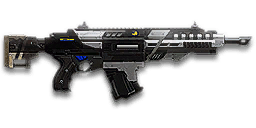

← Back to the Gauss Rifle S comparison
Sage Guide · New Conglomerate · Combat Medic
The NC Medic’s do-everything rifle — yours for 650 certs. Its free cousin, the NC1 Gauss Rifle starter you already own, fires the same bullets — this page teaches you what the 650 certs actually buy, and how to win fights with it today.
The one-line verdict: a hard-hitting 167-damage rifle — the same heavy bullet as the free NC1 Gauss Rifle — in a package that can be rebuilt for any job with underbarrel launchers and any sight you like. It rewards good aim and short bursts, and punishes spray-and-pray. Fight between 10 and 40 metres and it will carry you.

The Gauss Rifle S · 650 certs · 30-round magazine · underbarrel rail
Picture the scene, because you've probably lived it: you're sprinting across a courtyard, an enemy appears, and you do everything at once — hold the trigger down while you're still running, then press aim-down-sights (ADS) a split-second later, finger still down. The sight picture snaps in, it looks precise… and your bullets spray everywhere except the man in your crosshair. He kills you. It feels like the game cheated. It didn't — here's what actually happened.
You started firing from a sprint, from the hip. Sprinting is the least accurate state in the game: your cone of fire starts at 7.0° — fully bloomed, the widest it can ever be. Every shot you fire from the hip widens it further still (+0.12° per shot). Then you pressed ADS mid-hold — and nothing reset. Aiming down sights does not shrink a cone of fire that is already bloomed. The scope only gives you a precise picture; the bullets keep flying out of the wide cone you built while running and hipfiring. Two timers stack the deck further: your gun needs about 0.3 s to settle after a sprint, and raising the sight itself takes ~0.15 s. Trigger held through all of it means your first half-second of fire is pure confetti.
Stop → aim → fire. If you take one habit from this entire page, take this one. 1 · Feet. Let go of sprint (and the trigger, if you're already holding it). Stop, or drop into a strafe — anything but a full sprint. 2 · Sight. Press ADS and let the sight come up. 3 · Trigger. Now fire. Starting from the aimed cone of 0.03°, your first shots land where the dot points. You'll practise exactly this rhythm in the simulator in section 04.
Inside ~11 metres, don't ADS at all — hipfire and keep moving. Your moving hipfire cone (2.5°) is only about 0.48 m wide at 11 m — roughly the width of a man's chest — so most rounds still land, and you stay fast and hard to hit. No sight to raise, and stopping is optional: strafe while you hose him down. The disaster above is a mid-range problem — close enough that you reached for the sight, far enough that the spray missed. When in doubt past 11 m: release everything, aim, then shoot.
Every enemy infantry has 1,000 health (500 shield + 500 health). Your bullet does 167 damage up close, fading to 125 at long range. Headshots count double, leg shots count less (×0.9). That gives you three numbers worth memorising:
| Range | Damage | Head | Chest | Legs | Chest vs shielded Heavy |
|---|---|---|---|---|---|
| Close · 0–10 m | 167 | 3 | 6 | 7 | 9 |
| Mid · 10–55 m | 167→143 | 4 | 7 | 8 | 11 |
| Far · 55–90 m+ | 143→125 | 4 | 8 | 9 | 12 |
Perfect-accuracy times to kill: 3 headshots ≈ 0.21 s, 6 chest shots ≈ 0.52 s up close. In real fights you'll land maybe half your rounds — still, this is why the head matters so much on this gun.
Full power to 10 m, then a steady slide to 143 at 55 m and minimum at 90 m. The gold line shows Soft Point Ammunition, which stretches full power to 15 m.
One gun, four fighting styles. The right technique changes with distance — use the range finder below to see what your bullets do at any range, then learn the four bands underneath it.
How to fight hereAim down sights at the upper chest and neck. Fire in bursts of 5–8 — your recoil climbs into the head for free damage.
Aim: centre of the chest, from the hip. Keep moving.
Scoping in costs you time and halves your move speed — at arm's length that gets you killed. Your moving hipfire spread is only about 0.48 m wide at 11 m, so most rounds land on a chest. Strafe side to side (A/D) while firing so you're hard to track.
Aim: neck / upper chest. Bursts of 5–8 rounds.
This is where the gun earns its keep: near-full 167 damage, mild climb, fast handling. Start your crosshair at the neck — the natural upward climb walks your shots into the head, and 3 head hits end the fight in a fifth of a second. Strafe while scoped; you're slower, but a moving target still beats a still one.
Aim: chest. Bursts of 5–8 rounds, pause between them.
Damage is sliding toward 143 and your cone of fire blooms if you hold the trigger. Fire a burst, release for a split second to let accuracy reset, fire again. The recoil drifts up and to the right (23–25°), so pull your mouse gently down and to the left. Crouch or stand still when you can — both tighten your shots.
Aim: chest. Taps of 3–5 rounds at exposed targets only.
At 125 damage you need 8 chest hits — a long, loud advertisement of your position. Take these shots at stationary or fleeing targets, medics reviving, and engineers on turrets. Otherwise, your better play is to close the distance behind cover. Knowing when not to shoot is a skill too.
Your accuracy is decided by two things before skill even enters it: what your body is doing (your stance sets the starting cone of fire) and what your finger is doing (holding the trigger grows that cone with every shot). The Gauss Rifle S has no fire-mode switch — full-auto only — so "firing modes" are something you do with your finger, not a setting on the gun.
| Stance | Starting cone | What it means for you |
|---|---|---|
| Sprinting | 7.0° | Maxed out — the widest the cone can be. This is the section 01 disaster: never start firing from a sprint. |
| Hipfire, moving | 2.5° | Walking or strafing from the hip. Fine inside ~11 m, leaks rounds past the target beyond it. |
| Hipfire, standing | 2.0° | Your point-blank default. The 0.28 m ring at 8 m in section 05 is this stance drawn out. |
| Hipfire, crouched | 1.5° | The tightest hipfire you have (2.0° if you crouch-walk). Crouch when holding a doorway from the hip. |
| Aimed (ADS), feet planted | 0.03° | Standing or crouched makes no difference here — about sixty times tighter than hipfire. This is why section 01's order matters. |
| Aimed (ADS), strafing | 0.30° | The moving floor while scoped — ten times wider than standing still — and you move at half speed (0.5×). Strafe between bursts to stay hard to hit; plant your feet during each burst. |
A neat trick the numbers allow: standing still, your first 4 shots grow the cone from 0.03° to 0.27° — just under the 0.30° moving floor. So fire the first few shots planted, then start strafing. But remember the cone never stops growing while you hold the trigger: every shot adds 0.06° aimed (0.12° from the hip), and there is no point where it freezes.
| Mode | How your finger does it | Use it at |
|---|---|---|
| The mag dump | Hold the trigger and don't let go | Point blank only, or suppressing a doorway. Bloom maxes out fast — past ~8 rounds you're spraying, not aiming. |
| Bursts — the default | Hold for 5 rounds, release ~0.15 s, hold again. 6–8 rounds is fine while you're learning | Almost everything, 11–50 m. Each release resets the cone, so every burst starts at 0.03°. |
| Tap-fire | Short taps of 3–5, or single clicks, with a real pause between | 50 m and out, at exposed or stationary targets. Slow, but every round goes where the dot is. |
A target 30 m away, aiming down sights. Press and hold FIRE (mouse, touch, or hold Space with the button focused) and watch the holes walk wider the longer you hold — that's firing from an ever-growing cone. Release, let the cone reset, fire again. Aim for bursts of 5; 6–8 is tolerable while you're new. This practice window is shared by the whole Sage series: it's driven by a weapon profile plugged into the window — here the Gauss Rifle S's (577 RPM, 0.03° starting cone, 0.06° bloom per shot, target at 30 m) — and the spread is drawn at true scale from those numbers.
Cone of fire — fills as you hold, empties when you release.
Your bursts will be graded here — green at 5 rounds, tolerable up to 8.
Some things are easier to show than to say. Here's what your bullets actually do: how wide hipfire spreads at 8 metres, what a good burst rhythm looks like, and what the 2x sight really changes. The hands-on version — holding the trigger yourself — is the practice window in section 04.
A full-size target 8 m away — an arm's-length room fight. The rings show where hipfire rounds land around your aim point (the chest). Sizes are drawn to scale from the gun's real cone-of-fire numbers.
Read it this way: standing still, the 0.28 m ring sits well inside the chest — most rounds hit a target this size, which is why hipfire works point-blank. But move and it grows to 0.35 m — nearly as wide as his torso — so the edge rounds start leaking past him, and the rings only grow with distance while the man doesn't. Past ~11 m that's rounds missing entirely: the exact moment to switch to aiming down sights, where the spread shrinks to a dot. (Ring sizes use the real geometry: spread diameter = 2 × distance × tan(cone ÷ 2).)
Every shot widens your cone of fire ("bloom"). Releasing the trigger for a heartbeat resets it. Same 15 rounds, two very different outcomes:
The target pattern is bursts of about 5 rounds — that's the ideal. Bursts of 6–8 are fine while you're new (call it newbie tolerance). Past that, the bloom (0.06° per shot aimed, 0.12° from the hip) keeps growing with every shot, so the extra bullets mostly decorate the wall behind your enemy instead of hitting him. Short bursts also leave you rounds for the second enemy — remember, the magazine is only 30.
No zoom. The target at 35 m is small but the view is wide open — you see the crate, the tower, and the next enemy coming. Fast to aim, nothing blocks your edges. Best inside ~40 m.
Same target, same 35 m — but he looks twice as tall, so placing shots on his chest and head gets much easier. The price: your view narrows to the round window, the crate and tower are gone, and close targets feel fast and huge. Best at 25–50 m.
That's the whole 30-cert decision from section 06 in one picture: 1x for awareness, 2x for precision. Most veterans carry both and swap per base — indoors 1x, open ground 2x.
One honest warning first: unlike the free starter guns, nothing on this rifle is free. The gun itself costs 650 certs, and every attachment below costs certs on top. That is the whole point of the "S" — you are paying for the attachment rail, not for a stronger gun (the free NC1 Gauss Rifle fires the same bullets, faster — see section 09). Buy in the order shown and stop whenever the gun feels right.
A clean red-dot sight with no zoom. Your default, and honestly your best all-round option.
Doubles your view magnification. Costs almost nothing — the price of one good fight.
Night-vision sight: enemies glow white against a dark view, and it sees through smoke.
Tacti-Eye / LACO (3.4x), TrueShot / LX Mark IV (4x), BDS (6x) — sniper-style magnification on an automatic rifle.
The Gauss Rifle S's recoil is already manageable. Plenty of veterans run this slot empty forever.
Cuts vertical recoil by 30%. Costs you: hipfire spread grows 15%, and enemies see you on the minimap from 35 m farther away when you fire.
Your shots bloom 20% slower while aiming — longer accurate bursts. But you move 20% slower while scoped.
Hipfire bloom grows 40% slower — much steadier hip spraying. But vertical recoil rises 20% when you do aim.
You vanish from the minimap when firing and your shots are quiet. In exchange, damage starts dropping off 20 m sooner and bullets fly 15% slower (620 → 527 m/s) — harder to lead moving targets.
Hides your muzzle flash so your own view stays clear at night — but you appear on enemy minimaps from 15 m farther away.
Cuts side-to-side recoil by 25% (horizontal tolerance 0.35° → 0.26°), keeping your bursts on a single target. Tiny cost: weapon swap is 0.15 s slower.
Hipfire accuracy improves by a third (33% tighter cone). Replaces the Forward Grip — you can't have both.
The first shot of each burst kicks 60% less — but side-to-side recoil rises 10% on everything.
A torch whose beam reveals cloaked infiltrators. Toggle it with the attachment key (X by default).
A single-shot underbarrel grenade with splash damage — the "S" variant's signature toy. Switch to it with the Gear Slot 1 key; it adds 0.25 s to your equip time.
A single-shot underbarrel smoke grenade. Switch to it with the Gear Slot 1 key; it adds 0.25 s to your equip time.
A single-shot underbarrel shotgun round — a point-blank finisher. Switch to it with the Gear Slot 1 key; it adds 0.25 s to your equip time.
Full 167 damage now reaches to 15 m instead of 10 m (the gold line on the chart above). Cost: bullets fly 10% slower (620 → 558 m/s).
Bullets fly 10% faster (620 → 682 m/s) and minimum damage reaches to 110 m instead of 90 m — but full damage now ends at 8 m instead of 10 m.
Prices below are the attachments only — the gun itself is 650 certs on top of every setup. Start with the first, add the rest as you earn certs.
650 certs · Day one · the gun only
What 650 certs buys you before a single attachment. Genuinely good — learn the gun on this before spending anything else.
+230 certs · Recommended · 880 total
The best value in this whole guide. Covers every fight from a doorway to a tower courtyard.
+330 certs · Indoor brawler · 980 total
Built to hipfire down stairwells and hold a capture point room. Swap back to the All-Rounder outdoors.
+230 certs · Flanker · 880 total
No minimap blip, quiet shots, tight hipfire for the kills you take from behind. Weak in a fair fight — so don't take fair fights.
Medic note: swap the Point Hold's Laser Sight for a Smoke Launcher (+100 certs) and you get the squad-support build — smoke the revive, heal inside it.
You're a Medic — your tool heals you and your squad between fights, and a revive grenade turns a lost point hold into a won one. Top yourself off after every fight; a full-health Medic wins the next duel, a half-health one loses it.
Headshots deal double damage: 3 kills up close versus 6 to the chest. Don't aim at the head directly — aim at the neck and let the gun's natural upward climb carry shots two and three into the skull. It's the single biggest damage upgrade you own, and it's free.
Every shot widens your cone of fire. Holding the trigger past ~8 rounds at range means later bullets fly around your target, not into it. Five rounds is the ideal burst; release the trigger for a heartbeat between bursts — your accuracy resets and your hits per magazine roughly double.
Reloading with even 1 bullet left takes 1.85 s; an empty gun takes 2.5 s — an eternity mid-fight. Count roughly: after a kill or ~20 rounds, duck behind cover and reload early. Treat the last 10 rounds as your emergency reserve, not your working magazine.
Walk with your crosshair at head height, pointed where an enemy's head will appear — a doorway edge, a corner, stairs. Most beginners lose fights in the half-second spent dragging the crosshair onto target. While firing, tap A/D to strafe: a moving Medic is dramatically harder to headshot back.
Your damage, accuracy and healing all shine at close-mid range. Sprint between cover, use buildings and rocks as stepping stones, and arrive at your range before opening fire. The player who chooses the range usually wins the duel — make it you.
Every gun has a price. Here's where the Gauss Rifle S pays — and the habit that covers each hole.
The free NC1 Gauss Rifle fires the same 167-damage bullets, faster (600 RPM vs your 577), with less vertical recoil (0.30 vs 0.34). What your 650 certs actually bought is the attachment rail — underbarrel launchers, and the freedom to rebuild the gun per fight.
Play around it: if you haven't bought it yet, try the NC1 first — it's free, and it's genuinely excellent. Buy the S when you want the launchers, not when you want a better gun.
577 RPM is a slow fire rate for an assault rifle. A 750 RPM rifle adds up chest shots faster than yours in a face-to-face trade — 0.48 s to your 0.52 s.
Play around it: don't trade fairly. Heal first, aim for the neck, and use corners — your per-bullet damage and accuracy win fights that start on your terms.
Some rifles carry 40 rounds. Your 30 vanish fast when suppressing a doorway, and there's no extended-magazine option on this gun at all.
Play around it: burst discipline (habit 3) and early reloads (habit 4). Your 1.85 s reload is quick for a rifle — reloading often is the design, not a failure.
Past 90 m you're at 125 damage: 8 chest shots, 12 against a shielded Heavy, with bloom fighting you the whole way. Snipers and battle rifles own that ground.
Play around it: tap-fire at exposed targets only, and spend the rest of the time closing distance. You're a Medic — the front line is your address.
Its recoil angle is 23–25° rightward with 0.34 vertical kick — a hard vertical pull for an assault rifle. In a long burst your aim walks off the target's right shoulder — you'll see this clearly in the VR drill below.
Play around it: pull your mouse down-left while firing, in the opposite direction of the climb. The Forward Grip already trims the sideways part by 25%.
Unlike a Heavy Assault, you have no overshield to soak a bad peek, and like all rifles you move at half speed while aiming down sights (0.5x). The gun also takes 0.65 s to swap to — slow if a fight surprises you with your medical tool out.
Play around it: hipfire inside 11 m instead of scoping (that's the Point Hold build's whole idea), swap weapons behind cover, never in the open — and let your healing, not your health bar, be your safety net.
Open the world map, travel to VR Training, and run these on the target dummies. Five minutes before a play session beats an hour of dying confused.